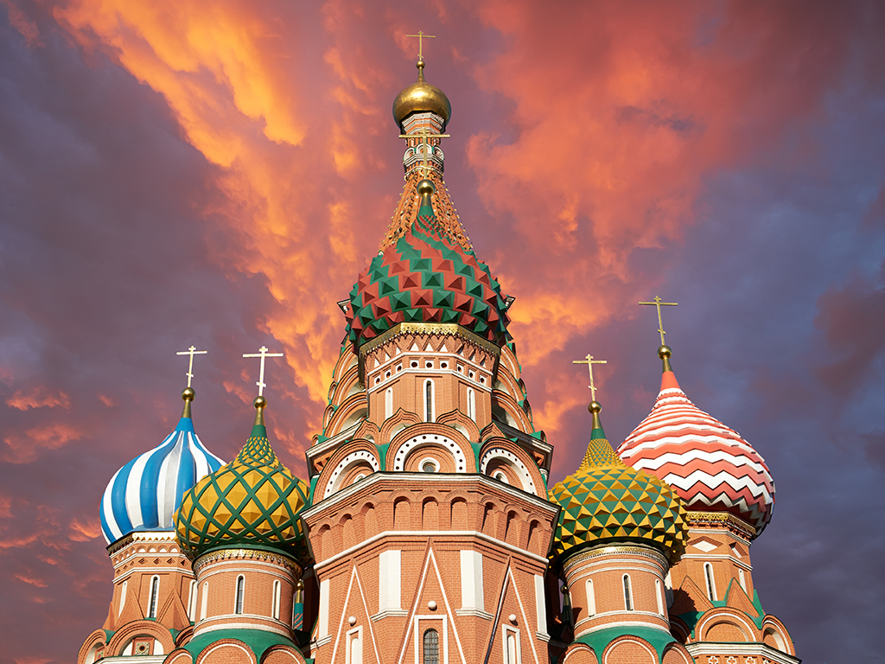

La Russie, plus grand pays du monde avec exactement 17 125 187 km² de superficie est souvent oublié (à tort) dans notre liste destinations touristiques. Avec des touristes de plus en plus nombreux chaque année, le secteur touristique Russe ne cesse de se développer, pourquoi ne seriez-vous pas le prochain touriste à vivre une expérience inoubliable dans ce pays si proche et si lointain à la fois ? Faites connaissances avec sa culture hors du commun, ses paysages à couper le souffle comme le lac Baïckal, ses traditions ou encore ses spécialités culinaires qui ne nous sont pas si inconnues que ça.
Il existe plusieurs avantages de partir en vacances en Russie :
Vous trouverez dans ce site les principales villes touristiques de Russie ainsi que des conseils pratiques pour passer d'agréables vacances en toute sécurité. Après avoir parcouru ce site, il ne vous restera qu'une seule chose à faire : Réserver vos billets, remplir vos valises, et partir à l'aventure ! Bon voyage !